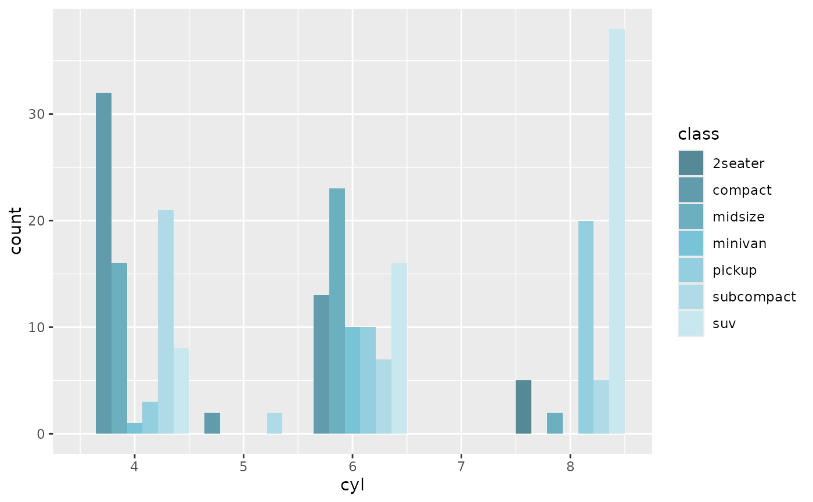

R/scale_colour_r2dii_tech.R
scale_colour_r2dii_tech.RdA custom discrete colour and fill scales with colours from 2DII technology palette.
scale_colour_r2dii_tech(sector, technologies = NULL, ...) scale_fill_r2dii_tech(sector, technologies = NULL, ...)
| sector | A string. Sector name specifying a colour palette. Run
|
|---|---|
| technologies | A character vector. Specifies technologies to use as
colours and their order. Run
|
| ... | Other parameters passed on to |
An object of class "ScaleDiscrete".
Other r2dii scales:
scale_colour_r2dii_sector(),
scale_colour_r2dii()
library(ggplot2, warn.conflicts = FALSE) ggplot(mpg) + geom_point(aes(displ, hwy, color = class)) + scale_colour_r2dii_tech("automotive") ggplot(mpg) + geom_histogram(aes(cyl, fill = class), position = "dodge", bins = 5) + scale_fill_r2dii_tech("automotive") 